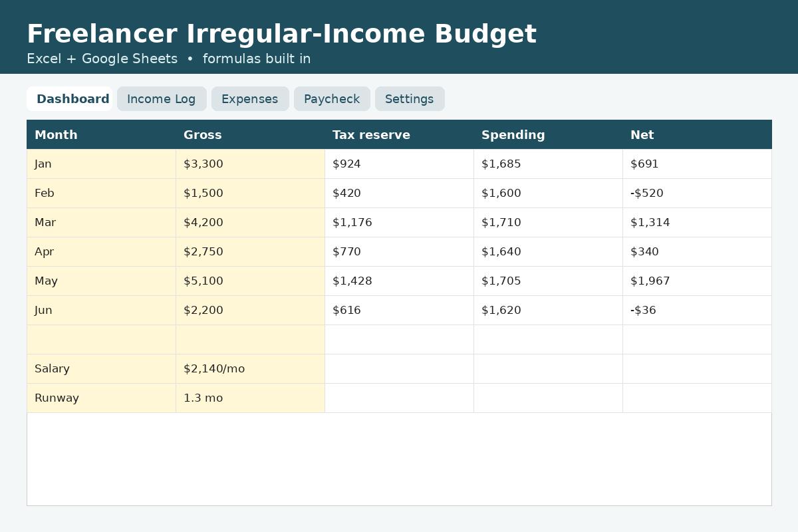

Freelancer Paycheck & Tax Set-Aside Calculator
Free, private, no sign-up. Runs entirely in your browser.
Want the full system?
Budget when every month is different: auto tax set-aside, monthly dashboard and a steady "pay yourself" salary.

How this calculator works
How much should a freelancer set aside for taxes?
Many freelancers set aside 25–30% of each payment, but your number depends on your tax bracket and location. The kit lets you set your own percentage.
How do I budget with irregular income?
Budget from a conservative average of past income, pay yourself a fixed salary, and keep a buffer for lean months. The kit automates all three.
Estimates only; not financial advice.